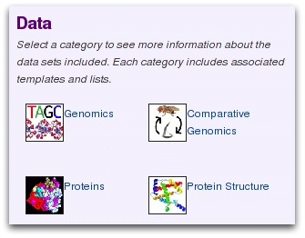
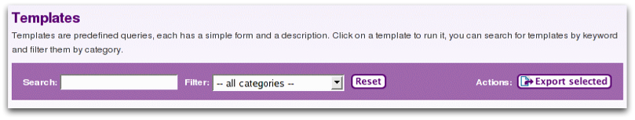

FlyMine includes a library of template queries to perform specific tasks. Each template encapsulates a query with a simple web form and a description. Examples of types of templates...
Find lists of related template queries on each aspect page.
Or use the 'Search Templates' menu link that searches the titles and descriptions.
Search templates for 'orthologue' and select the template 'Gene --> Orthologues + GO terms of these orthologues'
![[Select template]](select_template1.png)